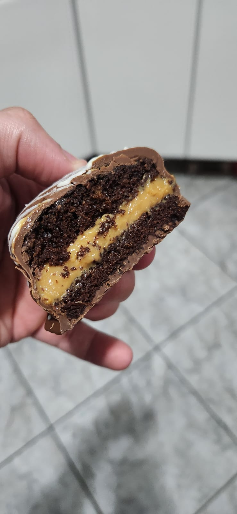
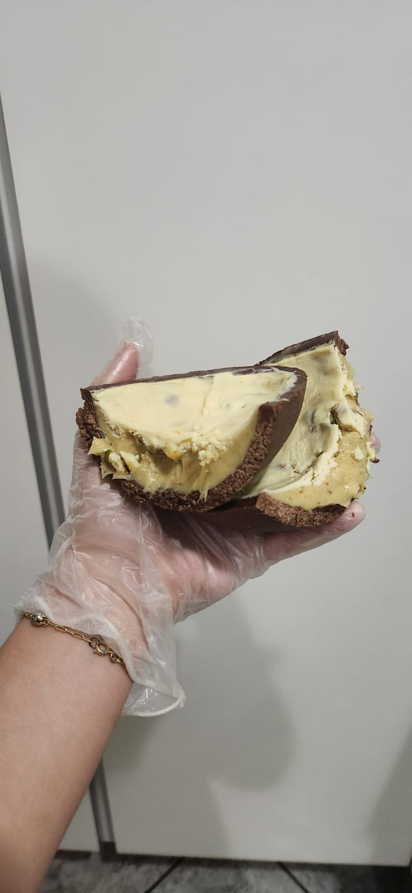
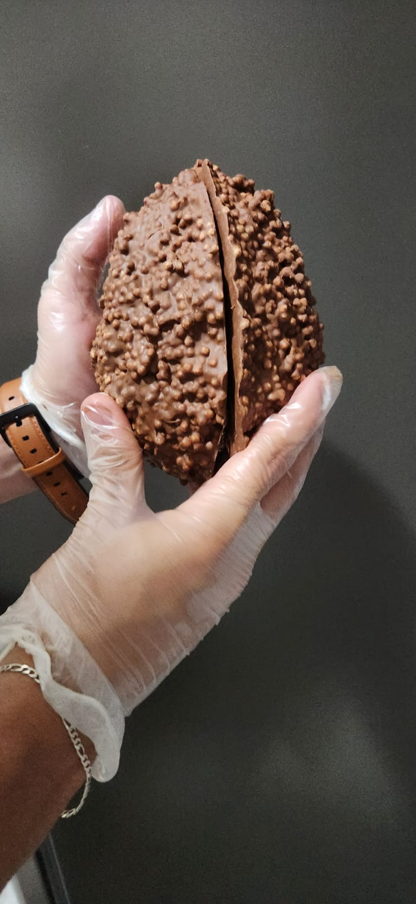
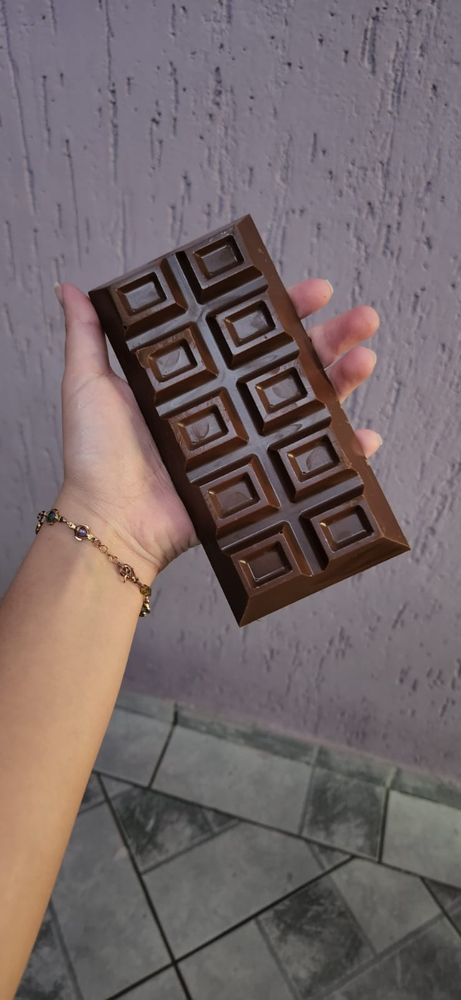

Sobre mim:
Meu nome é Leandro e começei a fazer ovos de páscoa em 2016 por que meus pais já nao compravam
mais.
Ganhei gosto em fazer doces e desde então não parei mais.
Hoje principalmente é uma fonte de renda mas fazer doces vai muito além disso, é trazer
alaegria, é trazer generosidade ao dia de uma pessoa que compram
e isso é o que mais me motiva a continuar fazendo e aprendendo essa arte de cozinhar



